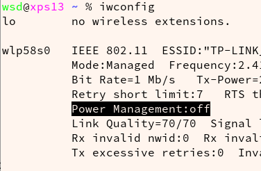
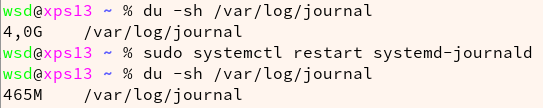
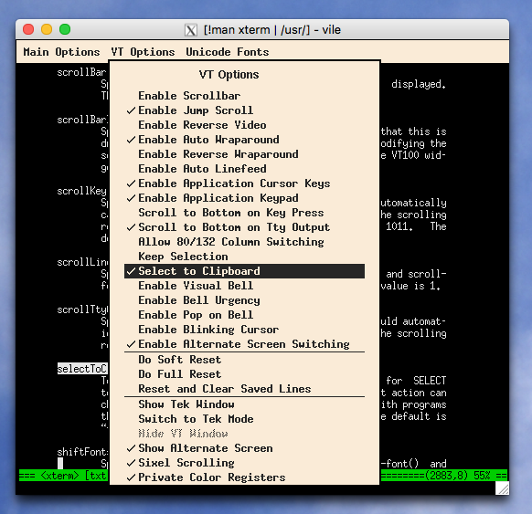
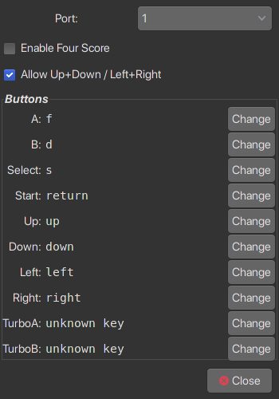
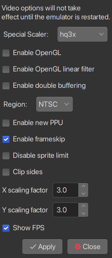

I have long heard about the fame and reputation of Arch Linux. But not until after I have commenced to explore on this distro did I really feel the enjoyness that Linux brings to me.
This article mainly aims to record the problems that I faced during my hunting journey as well as the solutions that are suitable to solve them. It is not going to just drop down every step that I followed, neither will it explains every concept and mechanism lying in those procedures, commands and scripts. Because the more detailed and thorough explanations can be easily found on ArchWiki and Web. What this article tries to do is to strip down my thoughts and to help to improve my and the readers’ understanding of Arch, of Linux, and hopefully, of Operating Systems. I just hope what I have written here would save my time if I face the similar problems again and help more people to save our precious time.
Preparation
The preparation process for those who ever installed some other Linux distribution versions is a comparatively easy job which may cause less problems. Note that UltraISO is not suggested for write Arch Linux installation image.
Installation media
How can I write image into flash disk?
After writing, you cannot find it by Windows or Linux file system. Keeping this in mind, don’t be worry.
1 | dd bs=4M if=Downloads/archlinux-2019.06.01-x86_64.iso of=/dev/sdx status=progress oflag=sync |
Network support
Some campus Wi-Fi need username and password to get Internet access, which is not supported by command-line Live system. For a cellphone, it have only one wireless card, so it cannot functioned as both the Wi-Fi user and the hotspot at the same time. If using a hotspot from cellphone, note that ping command may not be supported. An RJ45 wired connection without password is recommended because this is the easiest one. Remember that network connection is necessary.
How do I maintain the network connection which requires webpage user login for example a campus-net environment?
In this case, a hotspot generated by your cellphone mobile data is recommended, even though it is a little slow without a proxy.
How can I connect to an encrypted WiFi network by under archiso installing process?
The problem of connecting to network may be reappearing after OS is installed, so it’s better to understand as thorough as possible at the beginning. The connection process can be divided into three parts: first, setup interface; second, authentication from the router; third, get ip address.
Back to simply, set a non-encrypt wireless network and use wifi-menu for connecting. This tool belongs to netctl and will do first and second step for you. wifi-menu also supports WPA encrypted WiFi spot. However, nowadays WPA2 protocal has been widely used so several other tools can be selected to use archwiki-wireless-network-config. Take wpa_supplicant as an example:
1 | ip link set wlp58s0 up # First step: Set Wlan interface up |
Note that you must use root user for manipulation rather than sudo.
Installation
The mainly installation process generally consists of these parts: 0. Accessing Internet 1. Partitioning the disk and formating; 2. Install base system on new arch and change root; 3. Adding boot config; 4. Windows manager and display manager 5. Reboot into new arch 6. System settings
1. Partitioning the disk and formatting
1 | fdisk -l |
2. Installing base system for new arch
1 | mount /dev/[partition where you install root hierachy /] /mnt # First mount it under /mnt |
Don’t worry if one or some packages were lost during the installation process. If that could happen, just reboot go back to live system and install and chroot to newly-installed system.
3. Adding boot config
预备知识 —— Linux操作系统的启动过程：
1 | mkdir -p /mnt/boot/efi |
查看所有可用启动项：
1 | efibootmgr -v |
启动项的修复：
1 | efibootmgr --create --disk /dev/nvme0n1 --loader /boot/efi/EFI/grub/grubx64.efi --label "grub 2" --verbose -e 3 |
如果重启后仍然没有被检测到，则需要进入UEFI Shell手动添加
4. Desktop and display manager
bofore
Before choosing our willing destop, create a normal user for using graphical interfaces.
1 | pacman -S vim xterm zsh sudo fakeroot # fakeroot is for aur makepkg |
For window desktops, you can choose GNOME, KDE, or others.
You can use display managers(gdm for gnome and lightdm usually for kde) or not.
Here I give two suggestive configurations without display manager(Gnome and i3). For KDE users, goes here.
Before desktop settings, install startx:
1 | pacman -S xorg-xinit |
startx uses .xinitc and .zprofile(or .bash_profile)
4.1. GNOME wayland
1 | pacman -S gnome-desktop gnome-control-center gnome-shell gnome-tweaks # or put simply, pacstrap /mnt gnome |
For startx wayland, add to .zshrc(because I set zsh as default shell):
if [[ -z $DISPLAY && $(tty) == /dev/tty1 && $XDG_SESSION_TYPE == tty ]]; then
MOZ_ENABLE_WAYLAND=1 QT_QPA_PLATFORM=wayland XDG_SESSION_TYPE=wayland exec dbus-run-session gnome-session
fi
If you choose gdm display manager(which some software like teamviewer requires):
pacman -Syu gdm
systemctl enable gdm
For a more detailed configuration and more deeply exploring about Gnome, go to this article
4.2. i3 startx
pacman -S xorg i3-wm i3status dmenu # install i3dm
pacman -S xorg-xinit # install startx
Add to ~/.zshrc:
if systemctl -q is-active graphical.target &&
[[ ! $DISPLAY && $XDG_VTNR -eq 1 ]]; then
exec startx
fi
Add ~/.xinitrc
[ -f /etc/xprofile ] && . /etc/xprofile
[ -f ~/.xprofile ] && . ~/.xprofile
...
exec i3
after
unified wireless network config
wpa_supplicant.conf
1 | ctrl_interface=/run/wpa_supplicant |
1 | systemctl enable wpa_supplicant@wlp58s0.service |
5. Reboot into new arch
1 | exit # exit chroot |
Then change boot option at start up.
6. System settings and loacalization
Edit host name: /etc/hostname
Edit known hosts: /etc/hosts
Locale: https://wiki.archlinux.org/index.php/Locale
Fonts: https://wiki.archlinux.org/index.php/Fonts#Manual_installation
Add archlinuxcn repository
cat into ‘/etc/pacman.conf’ with
1 | /etc/pacman.conf |
Then in terminal:
1 | sudo pacman -Syy && sudo pacman -S archlinuxcn-keyring |
Note that Manjaro doesn’t have archlinuxcn support yet.
Q & A
Why I cannot find the disk file system when using fdisk -l
Analyse: I face this problem because I am using Dell XPS-13 with SDD. I should go into BIOS setup and change the integrated SATA hard drive controller from ‘RAID ON’ to ‘AHCI’. After that, reboot windows using diagonotics.
Add boot option for single-disk install
For my Dell-XPS13, type F12 to enter BIOS, then find ‘boot sequence’ menu and add a boot option from \EFI\arch\grubx64.efi
Restore the flash USB after installing process
Extra settings for dual system?
grub to replace windows EFI starter
how can I get write access to Windows NTFS filesystem?
Install the open source version of NTFS, i.e., ntfs-3g.
The proper way is to create a /mnt/win10 folder that is owned by your current user.
And then write the configuration in /etc/fstab likeUUID=FED8CDDDD8CD93F5 mnt/win10 ntfs-3g defaults 0 0
UUID can be found by blkid of root.
Q: why the times are incompatible?
Because windows just take the machine time as the time of current timezone. But Linux defaultly take it as UTC+0, and change to current timezone.
Solution:
Considering that modifying Windows settings is more complex, we change Linux settings by take machine time as the time of current timezone.
If I don’t use Windows OS for a while, it will go into Hibernate Mode. And when I open again, boot defaultly enter Arch Linux. Then I cannot edit files under Windows filesystem because they are in read-only state. How can I prevent this situation?
In Sleep Mode, the system won’t restart. So you need to change the power settings in control panel. Just go to advanced setting > Hibernate after this time > Never.
I think that will be fine.
Sharpening
Wireless network
Q&A: I suddenly has no internet access even IP address shows. I cannot ping gateway, why?
If you are using wps_supplicant, typing:
1 | sudo systemctl restart wpa_supplicant@wlp58s0.service |
may solve it instantly.
A sample configuration file /etc/wpa_supplicant/wpa_supplicant-wlp58s0.conf
1 | # Giving configuration update rights to wpa_cli |
If you are using netctl, typing:
1 | sudo netctl stop wlp58s0-USTB_Wi-Fi |
The power saving strategy of iw may cause regularly wireless network down. To prevent this, set it off:

Q&A: Change from wpa_supplicant to netctl and vice versa?
example of changing from wpa_supplicant to netctl:
1 | sudo systemctl stop wpa_supplicant@wlp58s0 |
If there exists an ip addr not delete, use
1 | sudo ip addr del [IP address] dev [WIFI dev] |
1 | sudo netctl start [your wifi profile] # Or sudo wifi-menu for the first time |
example of changing from netctl to wpa_supplicant:
1 | sudo systemctl stop netctl@USTB_Wi-Fi |
AUR
Before building an AUR package, ensure that base-devel is installed
1 | sudo pacman -S --needed base-devel |
AUR through proxy
export all_proxy='http://127.0.0.1:1080'under user’s shell by editing ‘~/.zshrc’.- under root user,
visudo /etc/sudoers,Defaults env_keep += "all_proxy ftp_proxy http_proxy https_proxy no_proxy"to keep envs when sudo
关于包管理多说一嘴
aur 安装后的包可以通过pacman来卸载，但无法像Repository中的包一样直接通过pacman来更新。
所以有些包不适合用aur来安装，有些包适合。
比如，更新一次就要下载很大安装包的IDEA，就比较适合用aur来管理，想更新就更新。再大一点的就可以脱离aur，直接去官网下载安装，如MATLAB。
而一些python下的工具或node.js安装的工具，可以用自带的pip或者npm来管理，用aur反而不够灵活，且多余。
Desktop: i3-wm
common commands
i3 supports three window layouts: stacking mode, tabbed mode, and standard mode.
$mod+s: stacking mode
$mod+w: tabbed mode
$mod+e: standard mode
To prevent sleeping
/etc/systemd/logind.conf
1 | HandleLidSwitch ignore |
append to ‘~/.xprofile’
1 | xrandr --output eDP-1 --off # close laptop primary screen |
Brightness of screen
for intel graphical driver, go into
1 | # cd /sys/class/backlight/intel_backlight |
Check if it is ok. Then we will combine keys to modify it. Install
1 | sudo pacman -S xf86-video-intel |
Before binding the kay, check the name of keys by xmodmap -pke, the edit:
1 | bindsym XF86MonBrightnessUp exec xbacklight -inc 10 # increase screen brightness |
Sound card
1 | sudo pacman -Syu pulseaudio pulseaudio-alsa |
Bluetooth sounder
1 | sudo pacman -Syu bluez bluez-utils pulseaudio-bluetooth |
Then open the bluetooth control
1 | bluetoothctl |
Touchpad tap-to-click
1 | sudo touch /etc/X11/xorg.conf.d/90-touchpad.conf |
Add these lines
1 | # 90-touchpad.conf |
Note that TappingButtonMap lrm means one-finger tap for left click, two-finger tap for right click and three-finger tap for middle click.
Wallpaper setting
Edit ‘~/.config/i3/config’
1 | ... |
System Maintainance
HDD trim
1 | sudo fstrim -a -v |
Limit systemd journal
/etc/systemd/journald.conf
1 | SystemMaxUse=500M |
Take effects immediately.

web browser profile-cleaner
1 | profile-cleaner |
International language support
set locale: https://wiki.archlinux.org/index.php/Localization
Change charset
1 | pacman -S enca |
However, this tool is not steady all the time. So a text editor or an editor plugin is suggestted.
Compatibility to Win OS
Run win10 in qemu/virt-manager, refer to https://billystudio.github.io/2019/09/17/Sept-17th-Create-vms-on-Linux-the-hard-way/
Install missing fonts on Linux host
I save win10 fonts into the hard drive disk.
https://wiki.archlinux.org/index.php/Fonts#Manual_installation
Some common missing fonts: Consolas, Calibri, Microsoft Yahei
Printer service
How can I print through the network HP printer?
- Install the Linux print service
pacman -S cups
In this step, you should check if this service is started after installation. You can typelocalhost:631to check. If cannot be opened, start the service bysudo systemctl start cups.socketorsudo systemctl start cups.service
If there is still some problem, try add your current user to lp group
1 | sudo gpasswd -a [username] lp |
Check your group by groups [username]
Install the HP Linux imaging and printing driver
pacman -S hplipFind the IP address of network printer, and run
sudo hp-setup -i [ip addr]
If it needs some authentification, enter username as root and provide root pass.
If the plugin is not successfully donwloaded by hp-setup program, then follow these steps:
Step 1: Go to https://www.openprinting.org/download/printdriver/auxfiles/HP/plugins.
Step 2: Download the plugin files (both ‘run’ and ‘run.asc’) for the hplip version that you are using. Then give them execute previlege by chmod +x.
Step 3: Re-run hp-setup -i. Choose to specify a path to the plugin and use the path to the ‘run’ file that you downloaded in step 2. It may give you some errors about gpg key checking, but install it anyway.
Step 4: In the final step, a test page should be printed.
Now you should have a working printer.
Refer 1: https://wiki.archlinux.org/index.php/CUPS
Refer 2: https://wiki.archlinux.org/index.php/CUPS/Printer-specific_problems#HPLIP
remove printer :
1 | sudo hp-setup -i -r |
terminal console
z plugin for directory jump
grant sudo previlige to common user
Install sudo
1 | cp /etc/sudoers /etc/sudoers.edit |
The file should be opened by default text editor. Mine is vim. Then uncomment the specification for wheel group because my user is already in wheel group.
1 | visudo -c -f /etc/sudoers.edit # check |
Xterm full screen
use ALT+ENTER.
Xterm middle key on touchpad
Ctrl + Click = middle key
Q: change the fonts of xterm
create a file ~/.Xresources, write the wildcard-form settings in it:
1 | xterm*faceName:Consolas:antialias=True |
Default color schemes:
1 | xterm*fullscreen: true |
background 太亮，换成淡粉灰色#FFFAF0（去白光蓝光），或者护眼色#C7EDCC
color3 的yellow太亮（用在warning和字符串高亮匹配），背景中体现不出，改为深一些的黄#DAAA01
BDMode 是否关闭变色替换加粗，这里关闭以使用加粗模式
colorUL 超链接变色模式。用于Ctrl+R匹配命令。若关闭，则使用下划线显示匹配。也应该与背景和前景区分开，使用灰白：#7A8181
cusorColor改为深红
1 | xterm*background: #FFF5EE |
Then add [[ -f ~/.Xresources ]] && xrdb -merge ~/.Xresources to the file .xprofile. For the X-org based GNOME environment, it is ok now. But for the default GNOME 3 wayland based desktop environment, since it didn’t initialize and X11 configurations, we should use other ways for autostarting. Here I suggest to rename .xprofile as .autostart_scripts.
I found a way equivelent to audo starting every time logging in that is using xdg autostart files. After installing xdg-user-dirs I write a .desktop file under ‘~/.config/autostart/‘.
1 | [Desktop Entry] |
Note that the Exec item should be a fullpath filename and the relevant files including ~/.autostart_scripts are granted as user excutable permision(+x).
Xterm prevent Alt+B becoming strange symbol
1 | xterm*metaSendsEscape: true |
How can I copy and paste from xterm?
Understanding the concept of ‘PRIMARY’ and ‘CLIPBOARD’, the middle mouse key is served for PRIMARY buffer. If I want to select also for CLIPBOARD, just Ctrl+Mouse Middle Key, and then check ‘selection to clipboard’.

Just highlighting by draging(inside one screen) or right mouse key(long screen) will select them for copy, Shift+Insert or using the mouse middle key for paste.
Add a keyboard shortcut for xterm
Set in GNOME settings > Keyboard shortcut > Add shortcut > run uxterm by pressing ‘Alt + T’
Those common-used software?
v2ray
1 | v2ray -test -config=/etc/v2ray/config.json |
web browser
Chrome and Firefox are my choices. I suggest adding archlinuxcn Repository to install google-chrome-stable and firefox-esr.
text editor
I use vim-gnome and visual-studio-code-bin.
sudo cp /usr/share/applications/visual-studio-code.desktop ~/.local/share/applications
cd ~/.local/share/applications
sudo chown wsd:wsd visual-studio-code.desktop
vim visual-studio-code.desktop
Add proxy --proxy-server="http://127.0.0.1:1080" to Exec.
Sometimes I open several VSCode windows and I want them to look different. In this case, set “window.titleBarStyle” = “custom” to make sure the menu merges title bar. And then install “window colors” extension.
pdf viewer
Evince and WPS PDF
Video player
VLC video viewer
System monitor
gnome-system-monitor
Chinese input method
搜狗拼音缺点：占内存、易崩溃、状态栏无法在不输入时隐藏
百度拼音缺点：状态栏无法在不输入时隐藏
fcitx自带拼音缺点：词库不够强大
or
1 | ibus ibus-libpinyin |
to get a quicker access to Chinese input method.
目前使用的方案为fcitx自带双拼。
通过输入分号；可以唤起快速输入，用户配置文件在 $HOME/.config/fcitx/data/QuickPhrase.mb
禁用全角快捷键：Global Config 选项 》 Show Advance Options 》 Swithing Full Width Character Mode
将两者快捷键都设置为 Empty 即可（按 Esc 键可以清空快捷键设置）
以下是之前倒腾搜狗输入法的记录(Deprecated):
Sogou Pinyin is currently the best Chinese Method solution but it is not easy to install it correctly on Arch Linux. Though I give methods here, more efforts should be made when practicing because it changes as time goes.
The installation scripts for sogoupinyin which is based on qt4 are:
1 | sudo pacman -Rns fcitx-im fcitx-configtool |
If anything happened during inputing, don’t panic, use Ctrl + 5 to reload Input method.
The releases for newly sogouimebs based on qt5 are here: https://gitee.com/laomocode/fcitx-sogouimebs/releases
Teamviewer
aur teamviewer on xorg
If showing the message Not ready. Please check your connection, then the service should be enabled
1 | systemctl start teamviewerd.service |
Note that teamviewer(current version is Teamviewer 14) need lightdm or gdm supports, so startx ways doesn’t work.
WPS Office
Add archlinuxcn repository, then
1 | sudo pacman -Syu ttf-wps-fonts wps-office wps-office-mime wps-office-mui-zh-cn |
Sometimes, wps office may not config input method properly. There are two ways to solve it:
For Zsh users Because wps binary files run /bin/bash, so you need to edit ~/.bash_profile and add:
export XMODIFIERS="@im=fcitx"
export GTK_IM_MODULE="fcitx"
export QT_IM_MODULE="fcitx"
For Bash users Normally for bash users, wps office can set input method well. But if that is not the case, you need to add some parameters for the executable file. Here I use fcitx on gnome. So I should replace add two lines to, for example, sudo vim /usr/bin/et:
1 | export XMODIFIERS="@im=fcitx" |
It is just a temporary solution because every time wps-office-et is upgraded, /usr/bin/et will be rewritten to a default config. So it is suggest to enable a user-specific application by
1 | sudo cp /usr/share/applications/wps-office-et.desktop ~/.local/share/applications |
wps-office-et.desktop
1 | Exec=$HOME/.local/bin/et %f |
1 | sudo cp /usr/bin/et ~/.local/bin/ |
and add the two exports above.
Remote Windows desktop
As Windows desktop client
1 | pacman -S xfreerdp |
Toggle Full screen: Ctrl + Alt + Enter
Link to lab server:
1 | xfreerdp /size:1920x1080 /network:LAN /u:wangshengdian /v:202.204.62.142 |
Or xfreerdp -g 1920x1080 -x 0x80 -u wangshengdian 202.204.62.142
As Serverrealvnc-vnc-server
Screenshot
Under GNOME:gnome-screenshot is good for use.
Under KDE:spectacle
Command Line tool:escrotum
Zip file generator and extractor
1 | sudo pacman -Syu 7zip |
For rar files:
1 | 7z x filename.rar |
For Windows zip file with GBK encoding, use python code in the following
1 | #!/usr/bin/env python2 |
Dictionary
Go to website http://download.huzheng.org/bigdict/ to download your demanding dictionary and enter root:
1 | tar -xjvf a.tar.bz2 |
Then we install another pretty good front-end software called goldendict
1 | sudo pacman -Syu goldendict |
If you are using Wayland rather than X11, goldendict might not go well. Use QT_QPA_PLATFORM=xcb to force X11 use.
1 | sudo cp /usr/share/applications/goldendict.desktop ~/.local/share/applications |
将 Exec= 行修改为 Exec=env QT_QPA_PLATFORM=xcb goldendict，这里的 env 指令相当于Shell编程中的export命令。
（参考 “goldendict” terminated by signal SIGSEGV (Address boundary error) and segfaults
和 Arch Wiki Desktop entries）
Generally, the dictionary will detected by it, if not, Edit -> Dictionaries -> Files, then add /usr/share/stardict/dic.
My experience after using digital dictionaries under WinOS basically includes some points of view. First, it’s of little difference if I am searching words with a web browser. Then I would like to tell some feelings of some WinOS dictionary software. Sure there are plenty of them under WinOS, but most of them carries some unwanted ads. Sometimes I just want the English meanings but they offer me Chinese meaning primarily and defaultly. Excluding those have the former two disadvantages, only Lingoes and OALED are left for choices. But a little unfortunately, Lingoes is huge-size and OALED3 is too old for Win10(its pixel rendering is bad). Under Linux, I can install a clean and small interface and just install the dictionary that I want(Here I mean Merriam-Webster). It’s a very pure experience.
Baidu Netdisk Downloader
aria2 backend, Camtd chrome extension and TamperMonkey are prepared.
Then install 网盘直链下载助手 userscript in TamperMonkey
Then login pan.baidu.com by your own account, click “下载助手”>”RPC下载”>”发送到aria2” to download.
Wallpaper Changer
GNOME3: How can I automatically change the wallpaers which are selected from a folder?
It is not a big problem because the gnome community has offered a large amount of extensions. What you need to do is to find and then use them. Here, the GNOME extension Wallpaper Changer is suggested for you.
Backup: rsync + fcron
install fcron and rsnyc
For example, a user works on server filesystem, and backs up to its local system daily.
1 | cd /etc/cron.daily |
In backup, write
1 | #!/bin/bash |
1 | sudo systemctl start fcron.service |
北邮人 / 爱北科
sudo pacman -S transmission-cli
Ref: https://wiki.archlinux.org/index.php/Transmission
When using from other computers meeting error 403: Forbidden Unauthorized IP Address.,
add your ip to rpc-whitelist in ~/.config/transmission-daemon/settings.json, then restart
1 | transmission-remote --exit # or pkill -3 transmission-daemon |
Games
街机游戏 fceux, 打开 nes 或者 zip 的 ROM 文件
按键设置：

屏幕大小设置：

Understanding
pacman
To see what packages belong to the gnome group, run:
1 | pacman -Sg gnome |
To install a package completely, use
1 | pacman -Rns [package_name] |
where -R means remove the package, -n means not saving important configuration files, and -s means removing its dependencies which are note required by any other installed packages.
Within the firewall, the speed is limited by v4. So I suggest v6. The differences are really distinguishable.
- get a v6 address
- get a v6 vps
# export all_proxy='socks5://127.0.0.1:1080'# pacman -Syu
To retrieve a list of the files installed by a package, run:
1 | pacman -Ql package_name |
To query which package a file/directory in the file system belongs to:
1 | pacman -Qo /usr/bin/ctags |
To clear the cache of all uninstalled packages in /var/cache/pacman/pkg/
1 | pacman -Sc |
Q&A
pacman -Syu facing:
1 | ==> WARNING: Possibly missing firmware for module: wd719x |
every time. To replay these warnings, you can also type:
1 | mkinitcpio -p linux |
Reason: you miss these firmwares:
aic94xx-firmware: Adaptec SAS 44300, 48300, 58300 Sequencer Firmware for AIC94xx driver
wd719x-firmware: Driver for Western Digital WD7193, WD7197 and WD7296 SCSI cards
xhci_pci: rensas controller like uPD720201 and uPD720202
You need to install these modules by makepkg -sri:
1 | git clone https://aur.archlinux.org/aic94xx-firmware.git |
installing eclipse from aur
1 | git clone https://aur.archlinux.org/eclipse.git |
Trouble shooting
1. Unable to lock database:
:: Synchronizing package databases…
error: failed to update core (unable to lock database)
error: failed to update extra (unable to lock database)
…
error: failed to synchronize all databases
It might because another process is running pacman. Just take a coffee and wait for it ^_-
1 | [root@inspiron-7537 shane]# pacman -Syu |
Solve:
1 | rm /var/lib/pacman/db.lck |
2. file confliction:
1 | sudo pacman -Syu |
This happens because I use pip install numpy but some packages in my repository takes python-numpy as dependencies. This is a trivial problem, just remove by sudo pip3 uninstall numpy.
3. could not satisfy dependencies (Dec 22nd 2019):
When running sudo pacman --noconfirm -Syu, I received an error:
1 | error: failed to prepare transaction (could not satisfy dependencies) |
This happens because libdmx requires dmxproto but updating will break this requirement chain, so that libdmx loses dependency.
To repair the bug, the easy way is manually removing libdmx and libxxf86dga, then upgrade.
But libdmx and libxxf86dga may be dependent under other upper level packages.
So we should use pacman -Rdd libdmx libxxf86dga && pacman -Syu.
4. GPGME error: No data
1 | error: GPGME error: No data |
Try to empty the synchronized folder and full-update:
1 | sudo rm -R /var/lib/pacman/sync |
5. error: signature from “xxx@archlinux.org“ is unknown/marginal trust
1 | error: failed to commit transation (invalid or corrupted package) |
you should run
1 | sudo pacman -Sy archlinux-keyring |
Sometimes my wifi is off. when I ping my local router, the destination is unreachable.
Later I find the power_saving function of iw causes that. So I edit/etc/udev/rules.d/81-wifi-powersave.rules:
1 | ACTION=="add", SUBSYSTEM=="net", KERNEL=="wl*", RUN+="/usr/bin/iwconfig wlp58s0 power off" |
Reboot and found iwconfig off the power management.
References
This video is also recommended: https://www.bilibili.com/video/av5462824/?redirectFrom=h5
“goldendict” terminated by signal SIGSEGV (Address boundary error) and segfaults: https://github.com/goldendict/goldendict/issues/935
Arch Wiki Desktop Entries: https://wiki.archlinux.org/index.php/Desktop_entries#Modify_environment_variables
评论
shortnamefor Disqus. Please set it in_config.yml.